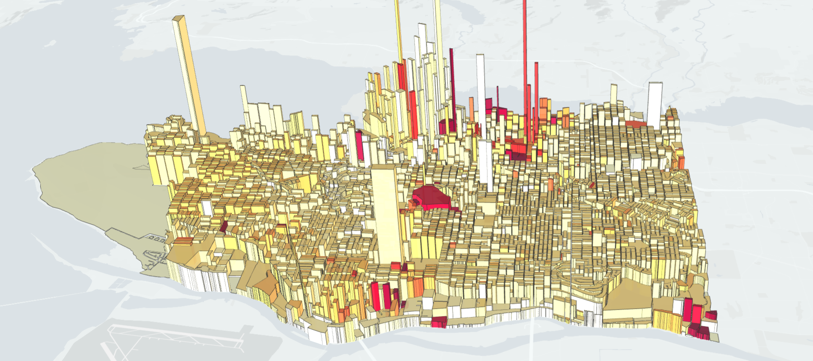
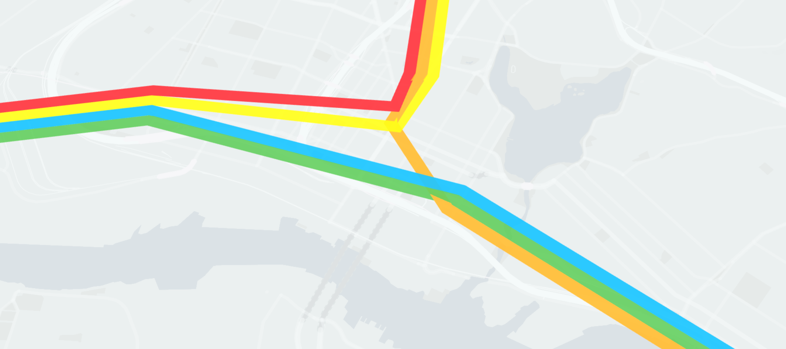
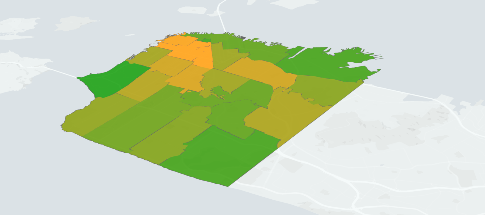
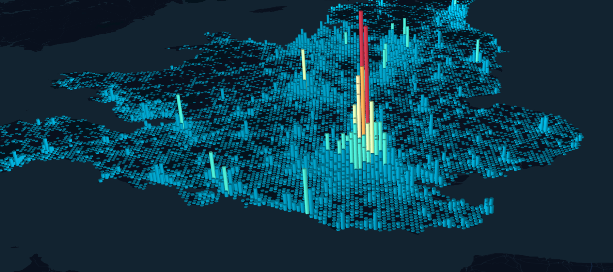
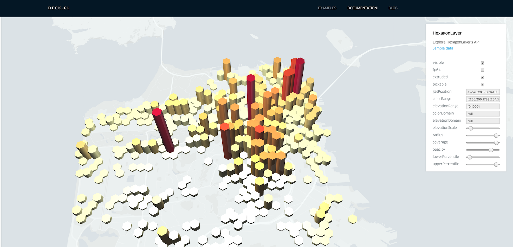

Introducing deck.gl v4.0
Introducing deck.gl v4.0
We’ve just released a new major version of deck.gl, so this is a good time to share some information about the improvements that went into the new version the rationale behind them, and provide some hints on our thoughts about the future of deck.gl.
What Motivated the Release?
When we did our first external announcement of deck.gl in November 2016 (announcing the deck.gl v3 release), we also stated our intention to improve and expand deck.gl’s layer catalog in future releases. This is a major part of what we are doing now through the deck.gl v4 release.
deck.gl v3 saw rapid adoption across a number of internal data visualization applications here at Uber, and it didn’t take long before an impressive list of new layers had been developed to support these applications. For layers that were reused between multiple applications, it became clear that open sourcing them in a new official deck.gl release would likely benefit both internal and external developers.
In deck.gl v4, the core layer catalog in deck.gl effectively doubles in size to over a dozen layers. These layers are carefully audited, tested and documented, and cover a significantly wider array of geospatial visualization use cases.
Obviously, while the new layers are the big stars of the release, deck.gl v4 includes more than just the layers. It stems from almost five months of intensive development, and incorporates improvements addressing a long list of comments, suggestions, bug reports and feature requests, from both internal and external users. If you are already a deck.gl v3 user, you will find few areas in v4, whether in terms of APIs, documentation, examples or actual code, that haven’t received some level of additional polish.
Why a Major Version Bump?
We take backwards compatibility of deck.gl very seriously. deck.gl follows semver versioning rules, which require that any change to existing functionality, no matter how small, is accompanied by a bump of the major version number, from 3 to 4 in this case.
Obviously, the addition of a set of new layers would not by itself change any existing functionality, and thus only require a minor version bump (e.g. deck.gl v3.1). However, as part of the release preparations, we conducted an extensive API audit of both the new v4 layers and the existing v3 layers and found that doing a small set of changes to existing v3 layer APIs would allow us to make the APIs of all layers considerably more consistent and the whole framework more cohesive and logical, which was clearly the right long-term choice.
In spite of the major version bump, deck.gl v4 remains highly compatible with deck.gl v3, both in terms of public APIs and the way layers work. Also, to ensure a smooth transition, we provide an upgrade guide and we expect the upgrade effort for applications to be minimal.
A Growing Layer Catalog
From the very beginning, deck.gl has always been a geospatial data visualization framework, and geospatial use cases will always be our top priority. The new layers added to the layer catalog are widely used in geospatial data analysis within Uber and we hope they will help solve the problems that deck.gl users face every day.
GeoJsonLayer

The GeoJsonLayer is designed to render geometry primitives in the widely-accepted GeoJSON data format. GeoJsonLayer itself is very powerful as it renders multiple types of geometry primitives, including points, lines, multilines, polygons and multipolygons all at once. Moreover, it can render polygons and multipolygons in different styles, currently supporting filled and outline styles in non-extruded (2D) mode, and filled and wireframe styles in extruded (3D) mode.
The flexibility of GeoJsonLayer combined with deck.gl’s high rendering performance makes it possible to render large amounts of data on the city or even the worldwide scale, as shown in the GeoJsonLayer example on our demo site.
PathLayer

The PathLayer is created to render a path comprising multiple line segments, specified by a sequence of coordinates. The path drawn has customizable width and mitered or rounded line joints.
PolygonLayer

The PolygonLayer renders general flat or extruded polygons specified by a “closed” sequence of coordinates, following the GeoJSON specification for polygon features. Polygons can be rendered as filled or outlined in non-extruded (2D) mode and filled or wireframed in extruded (3D) mode. This layer supports rendering convex, concave and “donut” polygons (with holes).
IconLayer

The IconLayer allows the user to render customizable markers on top of the base map. Multiple icons can be used in a single layer through a texture atlas and a configuration object in JSON. The size of the icons can be separately controlled and bounded with user-specified values.
PointCloudLayer

The PointCloudLayer is designed to visualize 3D point cloud data, usually generated from sensors like LIDAR and stereoscopic cameras. Point cloud data can contain position, normal and color values to control the style of rendered points, which are “billboarded” towards the user.
GridLayer and HexagonLayer

deck.gl v4 introduces two new “auto-aggregating” layers that complement the ScreenGridLayer from v3. The GridLayer and HexagonLayer draw equal-area rectangular or hexagonal cells. These layers go beyond directly displaying the supplied data on the map, in that they don’t draw one cell per data point, like most deck.gl layers do. They first aggregate (or “bin”) the user-provided data points into cells, and then draw the cells using the aggregated values to control properties like color and height, effectively rendering grid-based heatmaps.
Aggregation is an exciting new direction for deck.gl as we want to not only provide layers that are visually compelling to our users, but that are also smart.
Finally, note that the new GridLayer and HexagonLayer are different from the existing ScreenGridLayer as both the rendered geometry and the aggregation boundaries are in world coordinates rather than screen coordinates. Another difference is that the new layers also support both flat (2D) and extruded (3D) cells.
Layer extrusion and lighting
As mentioned in the previous sections, some deck.gl layers now support extrusion. Extrusion can be enabled by setting the extruded property to true, if available. Users can provide a getElevation accessor to control how much each individual element should extrude.
To make extrusion appear natural and visually pleasing, deck.gl v4 now has an experimental lighting module that provides basic shading of 3D layers. It has very straightforward APIs and users should be able to understand them simply by looking at the examples that come with deck.gl. It’s worth mentioning that since they’re experimental, the public APIs might change in the future release of deck.gl.
Interactive Documentation
deck.gl’s documentation has been significantly improved and reorganized in response to user feedback. In particular, every layer now has an interactive layer browser allowing users to tweak all properties of the layer and see how they affect the final rendering of layers while reading the docs. It also serves as an intuitive tool for users to select appropriate layers for their use cases.

Stand-Alone Examples
deck.gl v3 came with what was essentially a single example interleaved with the complicated build scripts and extensive package dependencies of the main library. This has been called out by many entry-level users, so the deck.gl team decided to provide multiple stand-alone examples with minimal configuration files. These examples should jump start the learning process of deck.gl and developers can easily copy them out and bootstrap their own apps from them. These examples are located in the example folder in deck.gl’s main repository.
Interoperability Examples
To leverage your data visualization knowledge with the tools you are familiar with, we also provide examples to demonstrate the interoperability between deck.gl and regular SVG-based visualizations. For example, one can use the modularized d3-* utilities for layout calculation, and have deck.gl take care of the rendering, thereby avoiding heavy DOM manipulation and enabling GPU-accelerated rendering of up to millions of elements.
What’s Next?
deck.gl v4 is an important milestone for us, but what’s next? While we haven’t finalized any plans for a possible deck.gl v4.1 or v5 release yet, we have many ideas about improvements and directions we would like deck.gl to evolve along. Some examples are:
More and Better Layers
Layers are how deck.gl creates value for most users, so adding more layers is on the top of our list. We will always keep improving support for the geospatial visalizations while also considering support for abstract/non-geospatial visualizations in the InfoVis area.
We also encourage all deck.gl users and developers to consider sharing your fancy new layers with the deck.gl community (github pull requests are welcome). If your layers help address some common needs and/or accomplish tasks common across multiple areas of data visualization, they might even end up being included in the core layers catalog of deck.gl in the next release!
Text Rendering Support
Text provides crucial information in many data visualization applications and can be implemented in various ways depending on specific use cases. Using WebGL to render text labels or geometries is both performant and versatile, but can be non-trivial to implement. In deck.gl v4 we are not providing any official support for text rendering besides a basic sample layer called “LabelLayer”. This is an area we are actively exploring.
Expanding and Improving Aggregation
The new aggregating layers in deck.gl v4 are only scratching the surface of what can be done in terms of adding data processing intelligence to deck.gl. More advanced aggregation algorithms are being researched, and will be implemented if they are useful for our internal or external customers.
More Data Processing (possibly on GPU) for Geospatial Data Analysis
As we march forward in the geospatial data analysis field, it’s obvious that the single-threaded Javascript engine in our browsers will soon be overwhelmed by computation-intensive tasks. We can solve this by seeking help from the backend, but not without its own limitations. The recently-released WebGL 2.0 standard provides a way for front-end developers to access powerful GPUs on every desktops and laptops that was not possible in the past. With features like transform feedback, we might be able to vastly accelerate many computational tasks in geospatial data analysis.
We have already started experimenting with those powerful features in WebGL 2.0 to do not only rendering, but also data aggregation on the GPU.
Improved Layer Composition
In the new v4 release of deck.gl, some new layers like GeoJsonLayer and HexagonLayer are what we call composite layers, as they are actually built by composing other core deck.gl layers. Composite layers have their own props but also leverage underlying layers for their capabilities. This kind of composition greatly reduces the effort required for creating new layers and makes the internal structure of many layers much cleaner. In future releases, we will continue making composite layer development easier by decoupling different sets of layer functionality and continuously improving our guides and docs.
More Advanced Picking Support
Picking (i.e. mouse selection) is one of the most common tasks of interactive data visualization applications and is a core functionality we provide with deck.gl. We have ideas for improving picking by adopting better picking boundary arbitration (bigger pick targets), supporting square or polygon area picking, etc.
Performance
Performance is always at the front of our minds as deck.gl, from the first day, was designed to be a high performance visualization framework. Many under-the-hood performance improvements went into the v4 release, including a 3.5~4X faster scatterplot layer, faster 64-bit maths, and ~2X performance boost in picking, etc. In the future, we are considering implementing a better WebGL state manager that faciliates resource sharing and reuse, a better layer manager that manages and updates resources in a smarter way, and a better rendering engine that only allows necessary data to hit GPUs from the very beginning.
Final Words
Finally, just to dispel any doubt from our users, we would like to reiterate our commitment that deck.gl will remain a “geospatial visualization first” framework. The non-geospatial use cases we are working on will not compromise our focus on maintaining and improving the geospatial visualization aspects of deck.gl. To the contrary, as we mentioned earlier in this article, users can expect see even more “advanced” geospatial processing functionalities to the future releases of deck.gl.
Contributors
deck.gl v4 was created by the Visualization Team at Uber. It is the result of a collaboration between a number of amazing contributors, including: Nicolas Garcia Belmonte, Xiaoji Chen, Balthazar Gronon, Shan He, Shaojing Li, Eric Socolofsky, Yang Wang and many others.